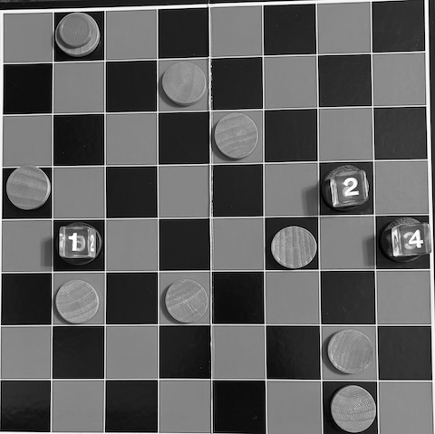
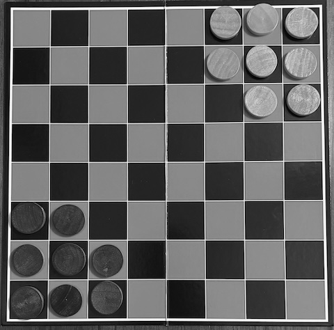
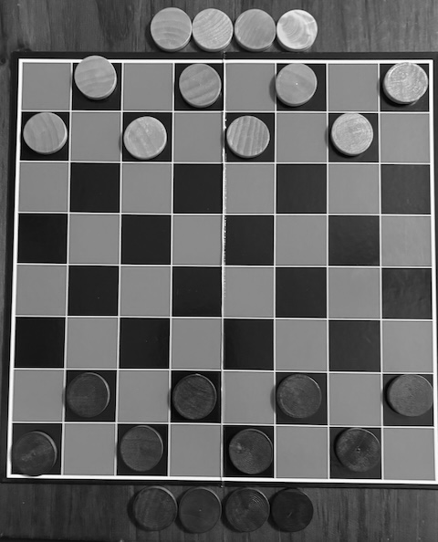
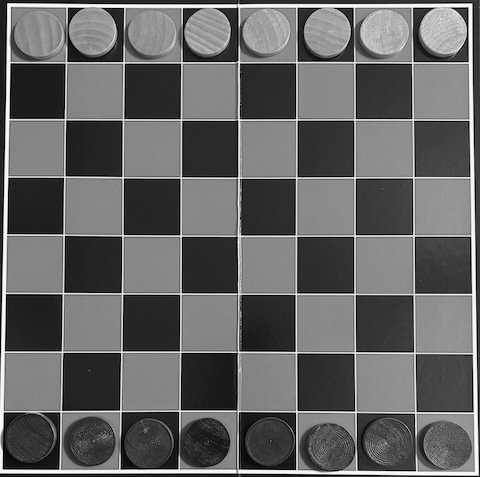
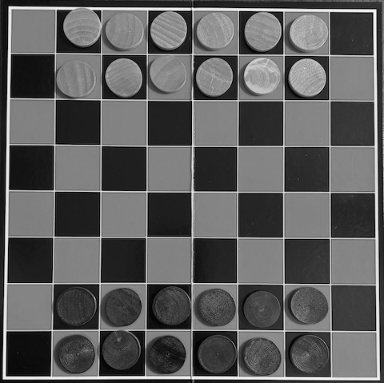
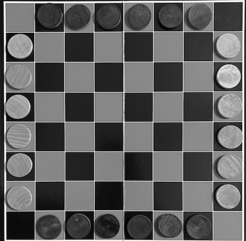
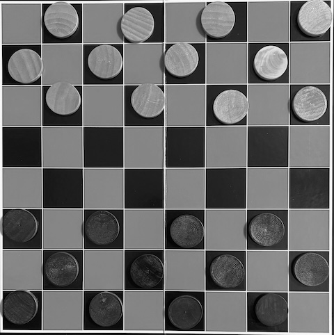
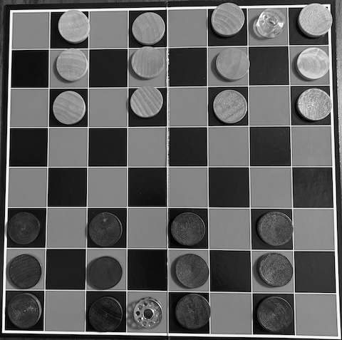

2025.12.04
The gift-giving holidays are quickly approaching and with them comes the inevitable stress around what and how much to give. If you happen to have a friend or loved on who enjoys activities that stimulate the intellect then I have good news for you. For only a couple of dollars and a printout of this post, you can give your friend a “Checkers Arcade” set that could occupy them for the rest of their lives. All that Checkers Arcade requires is a standard American Checkers set having an 8×8 board and 12 discs per side in two colors. If you don’t already have a Checkers set laying around then you can usually find one for a dollar or two at your local dollar store or thrift shop. With this simple kit, you can play a surprising number of interesting games that offer everything from light fun to dense strategic puzzles. Below I’ll provide some details and rules for some of my favorites. But first, let me take a quick moment to talk about how I’ve categorized the games in this post.
First, the word “Decision Horizon” reflects the scope of player decisions and the kinds of moves that players need to consider in a typical game. The values are:
While deciding which game to play can be informed by its complexity, often the true deciding factor is how much time is available to play at all. Therefore, the reference guide below is sorted by expected play time. Almost all of the games are 2-player games, but I added a couple that support 2-4 players.
| Game | Players | Decision Horizon | Play Time | Short Description |
|---|---|---|---|---|
| Ricochet Roombas | 2-4 | Local | 10 min | Be the first to find the shortest path from a specific disc to a goal disc. |
| Checkers Go-Moku | 2 | Local | 10–15 min | A quick duel to assemble a line of 5 discs to eliminate your opponent’s discs. |
| Halma | 2 | Local | 10-15 min | A quick jumping game where you move all of your discs into your opponent’s starting zone. |
| Squava | 3 | Immediate | 10-15 min | A quick 3-player game where players create a line of 4 discs to win, but lose if they ever make a line of 3. |
| Hobbit Checkers | 2 | Local | 10-20 min | My own variant of Checkers where your discs can get more and more powerful. |
| Vault | 2 | Local | 10–20 min | A leaping game where your own discs become mobility ramps for multi-jump captures. |
| Breakthrough | 2 | Local | 10-20 min | “Break through” to your opponent’s home row to win. |
| Lines of Action | 2 | Far-reaching | 15+ min | A connectivity race where discs move according to how many occupy a line, driving rapid, tactical formations. |
| Bashni | 2 | Far-reaching | 20+ min | A stacking-based capture game where towers change hands for dramatic reversals of fortune. |
| Cannon | 2 | Far-reaching | 20+ min | A formation-based game where mobile artillery try to capture the opponent’s town. |
In the rules the following terms are used:
Ricochet Roombas is a personal adaption of the amazing game called Ricochet Pyramids by Russ Williams, which itself is an adaptation of Ricochet Robots, designed by Alex Randolph in 1999.
Up to 4 players start the game with 9 discs of one color to serve as goals and 3 discs in the other color to use as the roombas. Using dice or bits of paper, label each of the roombas.

You win by being the first to discover and demonstrate the shortest path from a roomba to the goal disc.
The basic principle of the game is to find a path from the chosen roomba, to exactly on top of the goal disc. When a player thinks they’ve found the shortest path, they may speak the number of moves required to land on the goal. That player then moves any of the roombas the same number of times that they declared, landing on the goal at the end. Any roomba movement counts as one move, not just the chosen one. If the player’s declaration was correct and none of the other players can find a shorter path, then they win the round. Otherwise, one of the other players may declare a shorter path and demonstrate it from the same starting position.
A roomba moves orthogonally in any direction and only stops when it runs into one of the following:
The goal disc is special in that the roombas always pass through it without stopping if there’s nothing behind it. Therefore, to land on a goal, the roomba must be stopped by one of the other blocking objects.
Checkers Go-Moku is a good way to start exercising your gray matter when you first break out your set, and as a bonus, it’s a good quick game for two any time.
The game is played in two phases: a placement phase followed by a movement phase.
You win by capturing all but the last four of your opponent’s discs.
If a player makes a line of five of their own discs in a straight line across five adjacent squares, then they may remove any one of their opponent’s discs.
Taking turns, each player places one of their discs onto any empty square until all of their discs are placed.
Taking turns, each player moves one of their discs to any adjacent empty square.
Halma was designed in 1883 or 1884 by George Howard Monks for a 16x16 board, but the game can be adapted for smaller boards.
Players start the game with 8 discs aligned in a 3x3 square with the top-left disc removed, in the right corner of their side of the board. This is known as the starting zone.

The first player who moves all of their discs to completely fill the opponent’s starting zone wins the game.
Players take turns moving one of their discs either by moving it to any adjacent empty space or jumping over any adjacent disc and landing immediately behind it in the direction of the jump. Jumps may be chained together as many times as possible, in any direction.
Once a pieces lands in any of your opponent’s starting zone squares, then it can never exit that zone.
Squava is a 2-player game designed by Néstor Romeral Andrés and Cameron Browne, adapted for 3-players by Craig Duncan.
This game needs more than just the discs that come with a standard American Checkers set. The good part is that for the third player, you can use anything for the additional 12 tokens like: coins, beans, dice, buttons, cookies, washers, etc.
The board starts empty and then players take turns placing one of their tokens on any empty square. If on your turn, one of your possible moves prevents a win by the next player, then you must make that move.
You win by making a orthogonal or diagonal line of four of your tokens or the other two players are eliminated from the game.
If you ever make an orthogonal or diagonal line of three of your tokens, then you are eliminated.
Hobbit Checkers is a blend of Thai and Russian Checkers that I played with my kids when they were very young. These are the rules as I wrote for them way back in the day.
Each player sets up their side of the board the same way:

You win if your opponent has no more moves on their turn.
On your turn, you will move one of your adventurers into an empty square or leap-frog over the other player’s adventurers to make your adventurers stronger.
Leap-frogging is done by jumping over one of the other player’s adventurers along a diagonal line and landing in the empty square right behind it.
When you leap-frog over an adventurer, you take its top disc (or the whole disc if it was a hobbit) and place it on the bottom of your adventurer. You can even get feathers in your cap while leap-frogging if you land in villages along the way!
You must leap-frog if possible. If you can continue leap-frogging after landing with the same adventurer, then you must keep jumping. You can choose the order, but you cannot jump the same adventurer more than once in the same turn.
Vault is a fun jumping game designed by Néstor Romeral Andrés in 2015.
Players start the game with the board between them and eight discs filling all of the squares in the their home row.

If you start your turn with one of your discs anywhere on your opponent’s home row, then you win the game. Alternately, if your opponent is unable to make a legal move on their turn, then you win the game.
Players take turns moving one of their discs, and possibly capturing one of their opponent’s discs. The ways that a disc can move is either by “walking” or “vaulting.”
You can move one of your discs to any adjacent empty square.
A vault is a kind of jumping move using two of your own discs, where one disc jumps over the other and lands exactly as far away as the distance between the two discs before the jump. Jumps can be performed in any direction orthogonally or diagonally, over any number of empty squares or squares with discs, and must land on either an empty square or a square occupied by one of your opponent’s discs. If you land on an opponent’s disc then it is captured and removed from the game.
Breakthrough is an abstract strategy race game invented by Dan Troyka in 2000.
Players start with their twelve pieces arranged in their two home rows as two lines of 6 discs centered on the middle squares.

You win by being the first to move one of your discs into the opponent’s home row.
Players take turns moving one of their discs orthogonally or diagonally forward one space. Players capture an opponent’s disc by moving diagonally into an occupied square.
Lines of Action is a pure strategy game originally by Claude Soucie in 1967 and detailed in Sid Sackson’s book, A Gamut of Games.
One player puts six of their discs in the middle six squares of the row closest to them and their remaining six aligned the same in the farthest opposite row. The other player places their discs similarly but on the left-most and right-most columns.

The first players to connect all of their discs into a single connected group wins the game. Discs are considered connected if they occupy any of the adjacent squares to any other disc.
Players take turns moving one of their discs either orthogonally or diagonally the number of squares equal to the number of discs in the same line as the moving piece.
Bashni is a pure strategy game that is a stacking variation of Russian Checkers.
Players setup the board like a regular Checkers game, were discs are placed only on the dark squares of the first 3 home rows.

If your opponent has no valid moves on their turn, then you win.
A stack is one or more discs, and its commander is the top disc that determines both ownership and movement.
Players take turns moving one of their stacks according to the type of commander that it has on top. The types of commanders are soldiers or officers.
If a soldier moves into your opponent’s home row then it is promoted to an officer.
Capture is a special kind of movement, achieved by jumping over a stack. Soldiers capture via a short jump, landing in the diagonal empty square immediately behind the captured stack. Officers capture via a long jump where they move any number of squares, jump over the stack, and land in the diagonal square immediately behind the captured stack.
When jumping, the capturing stack removes the commander at the top of the jumped stack and places it beneath it in the landing square.
If a capture is possible on your turn then you must capture. Captures can be chained and while a capture is compulsory, you can pick your preferred capture sequence if there are multiple choices available. You can promote soldiers to officers in the middle of a capture chain if possible. Finally, you may jump over the same stack in the same capture chain.
Cannon is a strategic 2-player game designed by David E. Whitcher in 2003.
Players start with 4 columns of 3 discs on every other columns, starting with the left-most. Then players may place a token of their choice onto one of the squares in their home row, except for the right-most square. This token is called the town, and it may never move during the game.

If you capture the opponent’s town with a soldier or shoot it with a cannon, then you win the game.
Players take turns either moving one of their soldiers or cannons, or firing a cannon.
Cannons fire a projectile along either of its two directions either 2 or 3 squares away. A cannon cannot fire in a direction in which the square directly in front of the cannon is occupied.
That’s a good set of games to get you started. There are many more games designed with the simple Checkers board in mind, and some of the best that I’m familiar with are: Dipole, Byte, Nubia, and Network. These games stretch the imagination far beyond standard checkers and give families a way to play something fresh without spending more than pocket change. If you have your own variants or know of other games that fit the strict 8×8-and-12-discs constraint, suggestions are welcomed.
:F